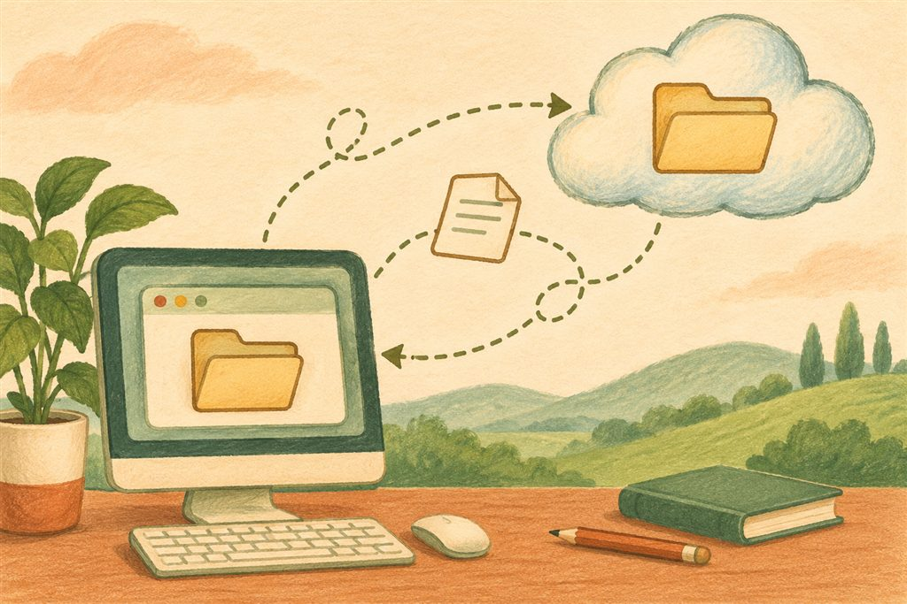

내 PC는 우물,
기관 드라이브는 저수지입니다
파일을 내 컴퓨터 한 대에만 두지 않으면, 일하는 장소가 달라져도 업무는 이어집니다.
컴퓨터의 C·D 드라이브는 집 앞의 작은 우물과 같습니다. 평소에는 쓸 만하지만 자료가 많아지면 공간이 모자라집니다. 기관의 구글 드라이브는 멀리 있는 큰 저수지입니다. 인터넷으로 연결해서 함께 사용하고, 컴퓨터를 바꿔도 같은 자료에 접근할 수 있습니다.
비영리용 구글 워크스페이스는 기관 전체가 100TB의 공용 저장 공간을 사용합니다. 강의에서는 사회복지 현장에서 사용하는 4~8TB 규모의 NAS와 비교해 설명했습니다. NAS는 여러 사람이 네트워크로 접속하는 저장 장치이며, 용량은 장비 구성마다 다릅니다. 종이 문서를 디지털로 옮겨 쌓아 갈 때도 큰 공용 공간이 도움이 됩니다.
구글 비영리판의 기관 전체 공용 공간
개인마다 따로 주어지는 용량이 아닙니다.
드라이브뿐 아니라 메일·사진 등도
기관의 공용 저장 공간을 나누어 씁니다.
클라우드를 잘 활용하면 PC의 하드디스크를 계속 늘리는 부담을 줄일 수 있습니다. 다만 기관의 자료량과 업무 특성에 맞게 계획하셔야 합니다.
다른 서비스와 비교할 때는 ‘개인’과 ‘공용’을 구분하세요
마이크로소프트 365의 일반적인 비즈니스 요금제는 원드라이브를 사람마다 1TB 제공합니다. 기관 공용 공간인 셰어포인트는 해당 라이선스 기준으로 기본 1TB + 구매 라이선스당 10GB입니다. 예를 들어 20개 라이선스라면 약 1.2TB입니다. 이 공용 용량과 비교하면 구글 비영리판의 100TB는 훨씬 큽니다. 실제 적용은 기관의 계약과 요금제를 확인하세요.
공식 자료: 구글 비영리판 안내 · 공용 스토리지 설명 · 셰어포인트 용량 · 원드라이브 용량
멤버 권한은 다섯 단계입니다
모든 직원에게 가장 높은 권한을 줄 필요는 없습니다. 자료를 읽는 분, 작성하는 분, 정리하는 분에게 필요한 역할을 정해 주세요. 팀별 공유 드라이브는 팀장이 관리자를 맡는 방식이 자연스럽습니다.
아래는 웹 드라이브 기준의 권한입니다. 다섯 가지 역할을 차례로 눌러 보세요.
뷰어
파일을 열어 볼 수 있습니다. 내용을 고치거나 댓글을 달 수는 없습니다.
워드·엑셀은 바로 편집,
한글은 여는 방법을 골라 주세요
웹 드라이브에는 파일을 끌어다 놓는 드래그 앤 드롭으로 자료를 올릴 수 있습니다. 올린 뒤에는 파일 종류에 따라 편집 방식이 달라집니다.
구글 편집기로 열어 고칩니다
워드는 구글 문서, 엑셀은 구글 스프레드시트, 파워포인트는 구글 프레젠테이션으로 열어 편집할 수 있습니다. 변경 내용은 원래 오피스 파일 형식으로 저장됩니다.
한글 파일은 두 가지 길이 있습니다
한글(hwp)은 드라이브에서 미리보기가 가능하더라도 표나 배치가 깨져 보일 수 있습니다. 미리보기만 보고 원본 파일이 망가졌다고 판단하지 마세요.
- 웹에서 작업하기: 드라이브용 한글 편집 앱을 추가하는 방법이 있습니다. 강의의 ‘제작물 공유 › rhwp studio’ 안내를 참고하세요. 연결 앱은 드라이브의 ‘연결 앱 › 연결할 앱 더보기’에서 마켓플레이스를 열어 찾을 수도 있습니다.
- 내 PC에서 작업하기: 데스크톱용 드라이브를 설치하고, PC에 설치된 한글 프로그램으로 파일을 열어 수정합니다. 익숙한 한글 프로그램을 그대로 쓰고 싶다면 이 방법을 따라가시면 됩니다.
공식 자료: 오피스 파일 편집과 원래 형식으로 저장
데스크톱용 드라이브를 설치해 보세요
웹에서만 쓰던 드라이브를, 윈도우 파일 탐색기에서 바로 쓰는 준비입니다.
먼저 윈도우 기본 브라우저를 크롬으로 바꾸어 두면 기관 계정으로 로그인할 때 연결이 매끄럽습니다. 크롬의 ‘설정 › 기본 브라우저’를 이용하거나, 윈도우의 ‘설정 › 앱 › 기본 앱’에서 크롬을 선택하세요. 윈도우 버전에 따라 ‘웹 브라우저’ 항목으로 표시되기도 합니다.
강의에서 안내한 설치 파일은 약 200MB 규모였습니다. 실제 크기와 설치 화면은 버전에 따라 달라지니 다운로드 화면을 기준으로 확인하세요. 설치를 진행하다 ‘건너뛰기’가 두 번 나오면, 강의 실습처럼 두 번 모두 건너뛰어 PC 폴더를 추가로 동기화하지 않고 시작하시면 됩니다.
실제 설치 버튼이 아닌 순서 안내입니다. 화면이 조금 다르더라도 각 단계의 목적을 기억하세요.
설치 후 파일 탐색기의 ‘내 PC’에 구글 드라이브가 나타나면 연결된 것입니다. 강의에서는 G 드라이브로 표시했습니다. 컴퓨터 설정에 따라 드라이브 문자가 다를 수 있습니다. 열어서 ‘내 드라이브’와 ‘공유 드라이브’를 찾아보세요.
데스크톱용 드라이브는 계정을 최대 네 개까지 연결할 수 있습니다. 설치는 계정마다 한 번이 아니라 사용하는 컴퓨터마다 필요합니다. 집에서도 탐색기로 작업하려면 집 컴퓨터에도 설치하고 기관 계정으로 로그인하세요.
공식 자료: 데스크톱용 드라이브 사용과 여러 계정 연결
탐색기에 넣어도, 웹에 올려도
같은 드라이브입니다

G 드라이브에 넣은 파일은 웹 드라이브에 나타납니다. 웹에 올린 파일도 탐색기에서 볼 수 있습니다. 이런 연결을 동기화라고 합니다.
크롬에서 파일을 다루는 일이 번거로우시면, 익숙한 탐색기에서 그대로 일하셔도 됩니다. 파일을 끌어다 놓고, 열고, 수정하고, 저장하는 순서는 같습니다.
개인정보가 없는 가상 파일로 흐름만 보여 드립니다. 실제 드라이브에는 연결되지 않습니다.
한쪽에 파일을 넣으면 다른 쪽에도 나타납니다.
한글 프로그램도 그대로 사용하세요
PC에 한글 프로그램이 설치되어 있고 수정 권한이 있다면, G 드라이브의 한글 파일을 두 번 눌러 열고 고친 뒤 저장하세요. 저장된 내용이 드라이브로 올라갑니다. 탐색기의 ‘새로 만들기 › 한글 문서’로 그 폴더에 새 파일을 만들 수도 있습니다. 이 메뉴는 한글 프로그램이 설치되어 해당 메뉴를 지원할 때 보입니다.
구글이 만들지 않은 파일도
버전 기록이 남습니다
구글 문서·스프레드시트·프레젠테이션에는 자체 버전 기록이 있습니다. 한글·파워포인트·PDF·그림·캐드처럼 다른 프로그램에서 만든 파일은 드라이브의 ‘버전 관리’로 변경 이력을 확인합니다. 데스크톱용 드라이브만의 기능이 아니어서, 웹에 올린 파일도 같은 기능을 씁니다.
목록에서 누가 언제 파일을 올렸는지 확인할 수 있습니다. 이전 버전은 30일이 지나거나 새 버전이 100개를 넘게 쌓이면 자동 삭제될 수 있습니다. 계속 남길 버전은 그 버전의 더보기 메뉴에서 ‘영구 보관’을 눌러 주세요. 필요한 시점의 파일은 영구 보관한 뒤 다운로드할 수 있습니다.
‘업무 안내문.hwp’의 가상 기록입니다. 영구 보관과 내용 확인을 연습합니다. 실제 파일을 변경하지 않습니다.
오늘 14:20 · 마지막으로 수정한 직원
어제 16:40 · 검토 담당 직원
이틀 전 10:10 · 작성 담당 직원
남겨 둘 버전에 ‘영구 보관’을 눌러 보세요.
한글 파일은 차례로 고쳐 주세요
일반적인 한글 프로그램으로 같은 파일을 여럿이 동시에 편집하면, 하나의 문서에 내용이 합쳐지는 공동 편집이 되지 않습니다. 각자가 따로 저장되거나 충돌 사본이 생길 수 있습니다.
“지금 제가 수정하겠습니다”라고 알리고 차례로 저장하면 같은 파일의 버전이 차곡차곡 쌓입니다. 동시에 작업했다면 사람·시간별 기록과 별도 사본을 함께 확인하세요. 여러 내용을 자동으로 합쳐 주는 기능은 아닙니다.
실수로 내용이 지워졌거나 누군가 파일을 훼손했더라도, 정상 버전이 남아 있다면 그 시점의 자료를 되찾을 수 있습니다. 수정하기 전 중요한 완료본을 보관하는 습관을 들여 보세요.
공식 자료: 파일 버전 확인·영구 보관·다운로드
파일에 문제가 생겼다면,
상황에 맞는 복구부터
파일 내용이 잘못된 경우와 파일 자체를 삭제한 경우는 복구 방법이 다릅니다. 랜섬웨어는 파일을 암호화해 열지 못하게 하는 악성 프로그램입니다. 감염이 의심되면 작업을 계속하지 마세요.
정상적인 이전 버전을 확인하세요
- 웹 드라이브에서 해당 파일의 ‘파일 정보 › 버전 관리’를 여세요.
- 정상 내용이 들어 있는 버전을 영구 보관하고 다운로드하세요.
- 파일을 열어 확인한 뒤, 필요하면 그 파일을 같은 파일의 새 버전으로 업로드하세요.
랜섬웨어가 의심될 때의 세 가지 행동
- 감염된 PC를 즉시 끄고 더 사용하지 않습니다. 추가 동기화와 피해 확산을 멈추고 기관의 보안 담당자에게 알립니다.
- 안전한 다른 PC의 웹 브라우저로 드라이브에 로그인합니다. 복구용 PC에는 데스크톱용 드라이브를 설치하지 않고 웹으로 확인합니다.
- 이름이나 내용이 손상된 파일의 정상 버전을 찾아 되돌립니다. 버전 관리에서 정상본을 영구 보관한 뒤 내려받아 확인하고, 필요한 경우 새 버전으로 올립니다. 손상된 최신 기록을 삭제해 이전 버전으로 되돌리는 방법을 사용할 때도 정상본 확보가 먼저이며, 삭제 가능 여부와 필요한 권한을 관리자와 확인하세요.
원본과 정상 버전이 모두 없어졌다면 복구가 어려울 수 있습니다. 감염된 PC는 점검과 정리가 끝난 뒤 다시 연결해야 합니다.
관리자 복구에도 기한이 있습니다
직원이 휴지통을 비운 뒤에는 25일 안에 관리자가 복원할 수 있습니다. 공유 드라이브도 관리 콘솔의 ‘앱 › 구글 워크스페이스 › 드라이브 및 문서 › 공유 드라이브 관리 › 복원’에서 날짜 범위를 지정해 삭제된 항목을 복구할 수 있습니다. 계정 자체를 삭제했다면 계정 복원은 삭제 후 20일 안입니다. 기한이 지난 자료는 별도 백업이 있어야 합니다.
공식 자료: 공유 드라이브의 삭제 파일 복원 · 삭제 데이터·계정의 복원 기한
문서 보안 프로그램과의 충돌은
기관의 정책으로 풀어야 합니다
파일을 자동으로 암호화하는 문서 보안 프로그램(DRM)을 사용하는 기관에서는 데스크톱용 드라이브와 충돌할 수 있습니다. G 드라이브로 내려온 파일까지 암호화되면, 다시 올라간 파일을 다른 직원이 열지 못하는 상황이 생길 수 있습니다.
기관이 어떤 방식으로 일할지의 결정입니다.
문서의 반출 통제와 자동 암호화가 최우선인 업무라면 기존 문서 보안 체계의 역할이 큽니다. 직원이 지역을 다니며 주민과 함께 일하고, 장소에 얽매이지 않고 협업하려면 클라우드가 도움이 됩니다. 기관이 추구하는 업무 방식과 보안 요건을 함께 놓고 선택해야 합니다.
G 드라이브 폴더를 암호화 대상에서 예외 처리할지, 장기적으로 도구를 정리할지는 직원 개인이 임시로 정할 일이 아닙니다. 기관 책임자·보안 담당자·프로그램 공급자가 함께 확인해 정책으로 결정하세요. 필요할 때마다 잠깐씩 보안을 풀어 주는 방식은 안정적인 협업과 일관된 보안 운영을 모두 어렵게 합니다.
파일을 옮기기 전에
폴더 규칙부터 정하세요
저장 공간이 아무리 넓어도 규칙이 없으면 자료를 찾기 어렵습니다. 강의에서 권장한 폴더 정리 원칙은 세 가지입니다. 이는 서비스의 기술적 한도가 아니라, 함께 쓰기 편하도록 정하는 기관의 운영 규칙입니다.
폴더 깊이는 다섯 단계까지
폴더 안에 폴더를 끝없이 만들지 마세요. 자료를 찾기 위해 지나가야 하는 길을 짧게 유지합니다.
이름 앞에 숫자를 붙이세요
01, 02처럼 앞자리에 숫자를 붙여 중요한 자료가 위에 오도록 순서를 정합니다. 팀마다 제각각 쓰기보다 함께 맞추세요.
‘기타’는 99번, 맨 끝으로
분류가 애매한 자료가 중요한 업무 폴더 사이에 끼지 않도록 ‘99_기타’로 정리하세요.
└ 02_사업 결과
└ 99_기타
과거의 모든 자료를 한꺼번에 옮기려 하지 않으셔도 됩니다. 지금부터 만드는 문서, 올해 자료부터 공유 드라이브에 모아 보세요. 폴더 규칙을 기관 정책으로 정하고, 새로 들어오는 직원에게도 같은 방법을 안내하는 것이 파일 관리의 시작입니다.
자주 묻는 질문
질문을 누르시면 답변이 펼쳐집니다.
자료가 계속 쌓이면 저장 공간이 모자라지 않나요?
집 컴퓨터에서도 공유 드라이브를 탐색기로 보려면요?
한글 파일도 여럿이 동시에 고칠 수 있나요?
드라이브에서 새 한글 파일을 바로 만들 수 있나요?
세 문제로 확인해 보세요
정답을 외우기보다 이유를 떠올려 보세요. 답을 고른 뒤 ‘정답과 해설 확인’을 누르시면 됩니다.
우리 팀의 드라이브를 시작하는
오늘의 과제
기관에서 허용한 컴퓨터와 개인정보 없는 연습 파일로 시작하세요. 마친 항목을 누르시면 진행 상황이 이 브라우저에 저장됩니다.
한 가지를 마쳐도 좋은 시작입니다.
모든 자료를 오늘 옮길 필요는 없습니다.
오늘 만드는 문서부터, 함께 쓰면 됩니다.
이 안내서의 바탕과 공식 도움말 보기
제공된 강의 원고·현장 질문·강의 뒤 정정 사항을 바탕으로 작성했습니다. 추가 설명 여섯 곳은 ‘보충’으로 구분했습니다. 서비스의 메뉴와 화면은 버전·계정·기관 설정에 따라 달라질 수 있습니다.
공식 문서 확인: 2026년 11월 13일 · 그림: 이 안내서를 위해 생성한 손그림풍 일러스트